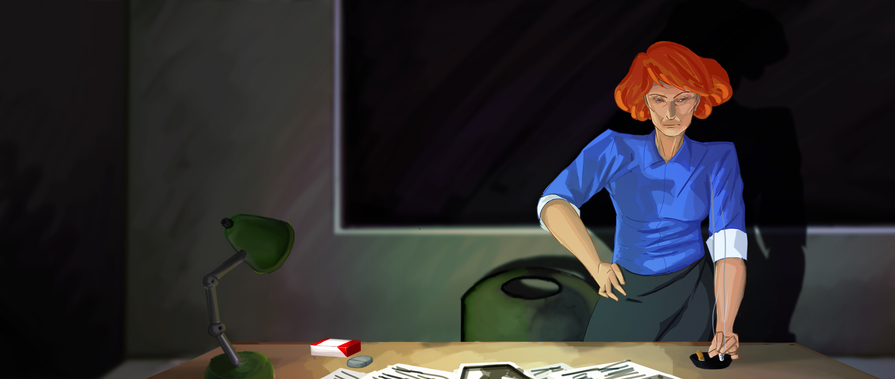 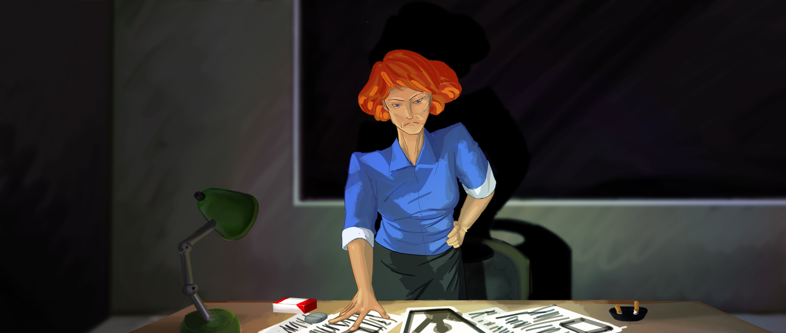 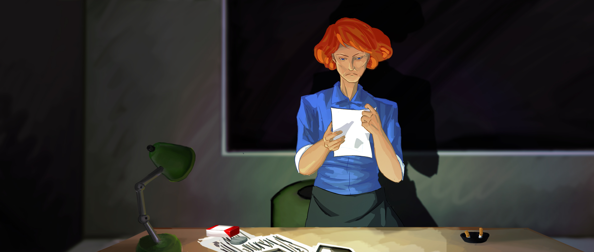
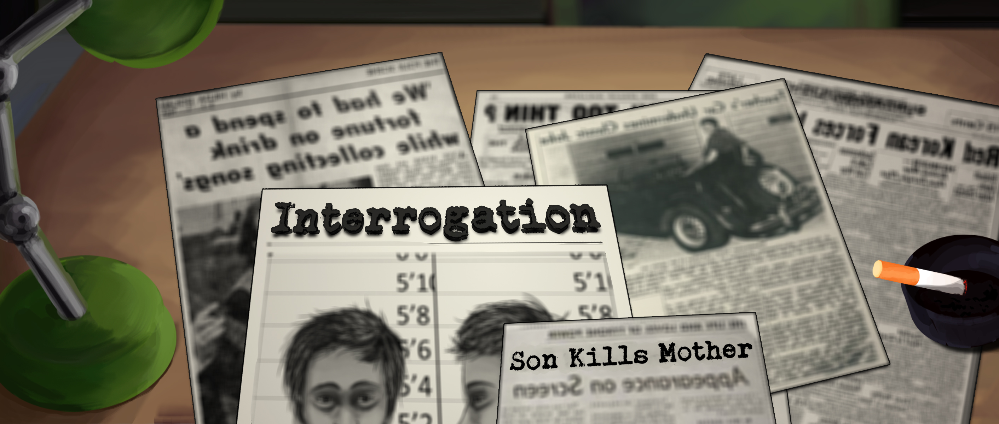
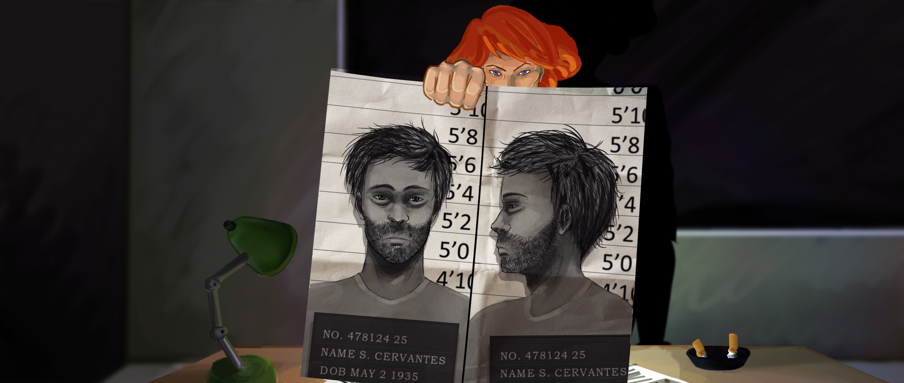
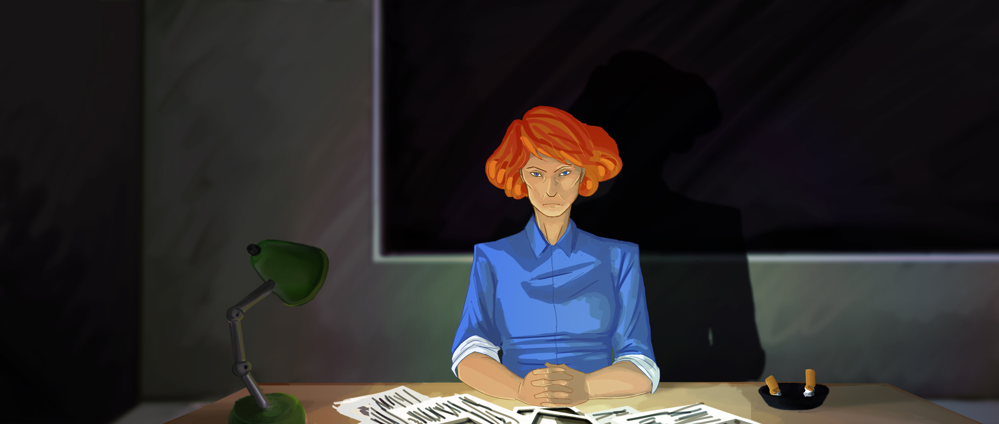 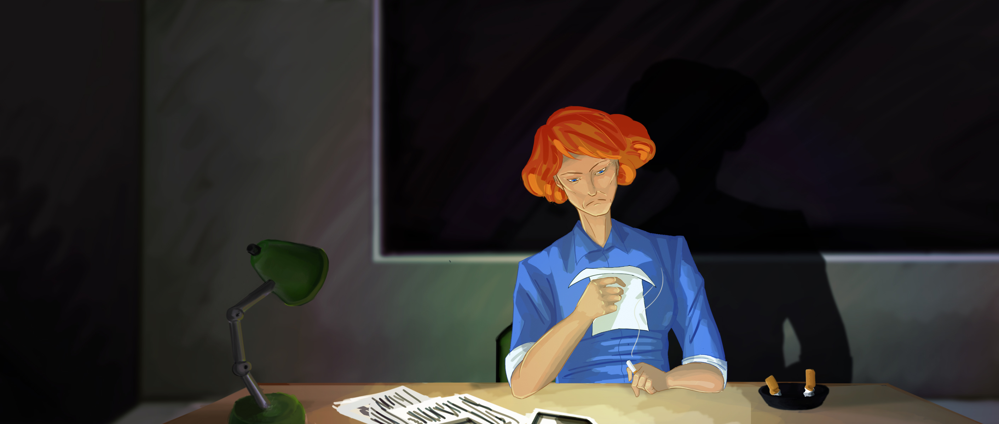 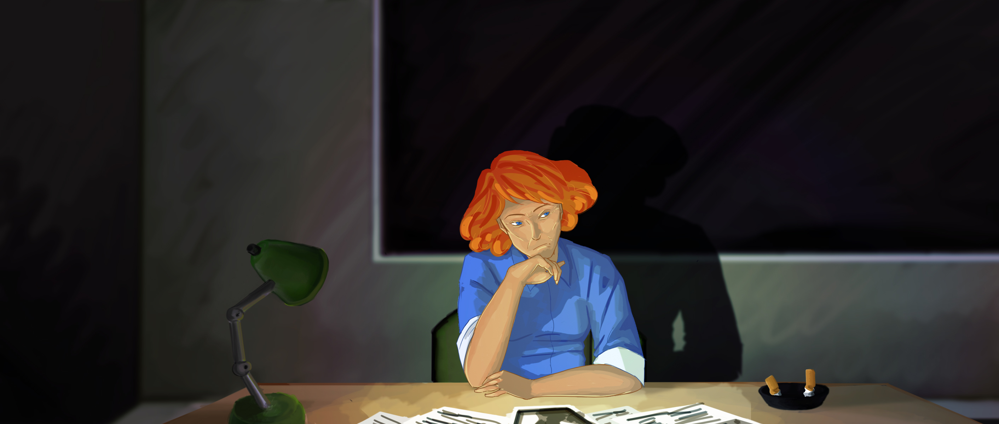 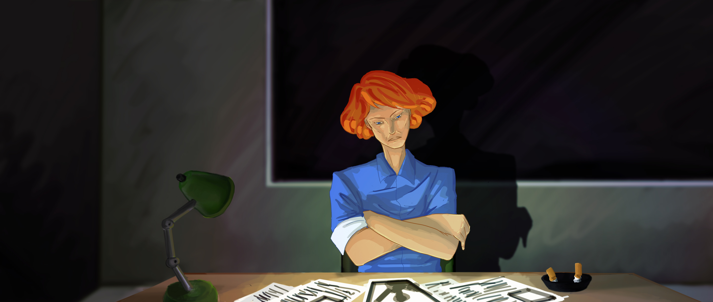 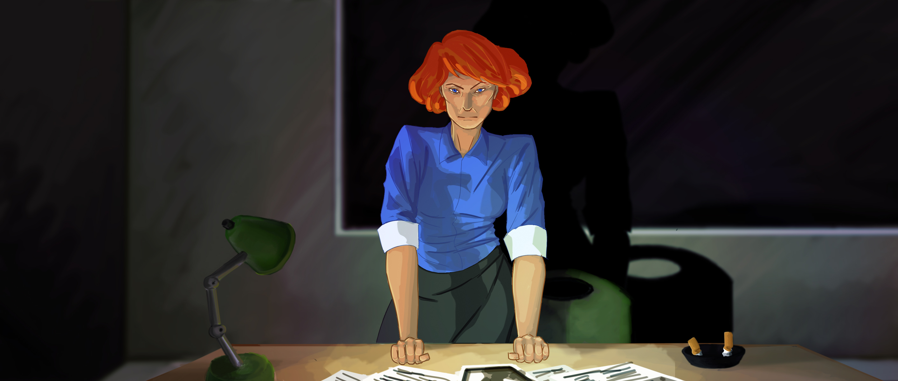 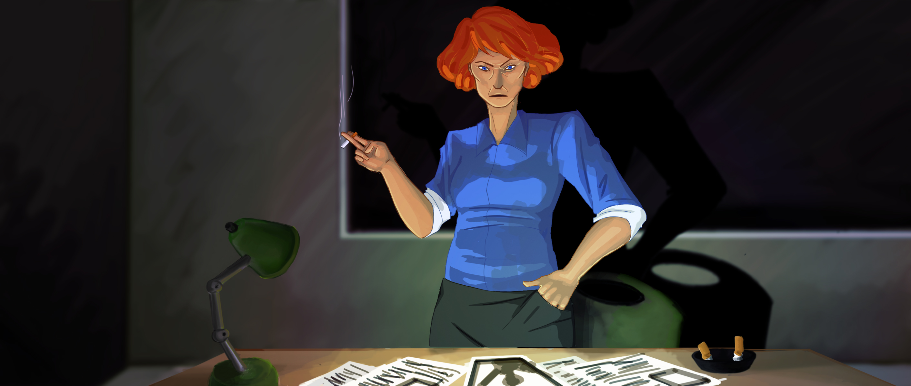 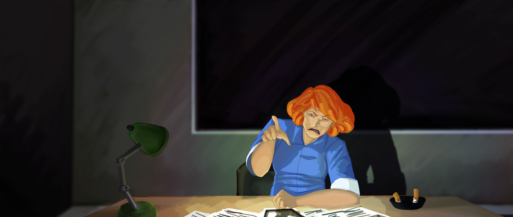 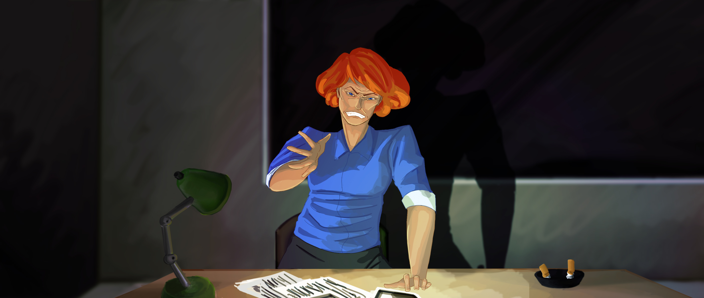 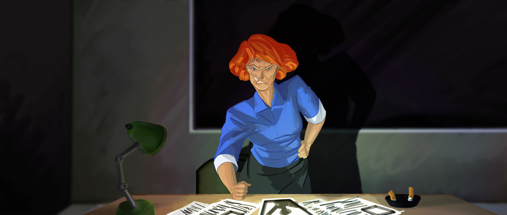
Interrogation Playtesting Video
Our latest video shows snipets of three playtesting sessions we had with the testers.As you can see, we've made a lot of progress on Interrogation!


Interrogation Second Prototype
This video shows the SECOND prototype of Interrogation in action. This prototype shows the vibration component working. You can see in the video that when the user lies, the vibration motor goes insane. Then when the user tells the truth, the vibration motor stops. This component will be incorporated into the custom-gaming vest, which is currently under construction.Interrogation First Prototype
This video shows the first prototype of Interrogation in action. The user's point-of-view is established and they are able to traverse the narrative. When the user answers a question and is found to be lying, the arduino-connected LED lights up and flashes. The LED turns off when the user tells the truth.Last week I finished working on two animation sequences. One was for dust passing through the lamp's light and the other was residual smoke coming off the ash tray. I don't have too much experience with animation so it took more time than I wanted to spend on it (mainly because I was teaching myself Flash ha ha). I messed up on the frames for the dust and didn't make them transparent so I need to go back in and fix that up.
Now, I just finished inbetween frames for the Interrogator getting up and sitting down. These were fun to draw because, out of context, they kind of look like action poses . . . because Interrogation is totally an action game. If I have more time I may want to make more poses :p
So, as many people have seen, we have our bags working with the air pump. They inflate pretty darn well.
We've secured them into the vest using Velcro, which ended up being a great idea since we did have to end up moving the air bags around a bit.
This was a great leap this week, but there's a lot more for me to do! A few issues came up with this new effect, I'm calling it the "constriction" effect.
ISSUE #1: The air pump vibrates. Vibrates quite a bit. We'll have to tinker around a lot more to minimize the pump's vibration since it can't be avoided completely.
ISSUE #2: I still think there's some air escaping. This is the biggest issue. When players are wearing the vest, the air doesn't squeeze them enough to notice. I'm assuming this is because air is still escaping from somewhere, whether through the fabric or the epoxy lining.
Well, at least it works and we have time to brainstorm solutions to these problems.
I have high hopes!
With much of the story and script writing out of the way, I've been tasked with adding smaller, yet essential, features to our game. In this case, I'm talking about a working pause menu. Because we realize, once we create an .exe of our game, there's no way to quit or go to menu. So all it took was a few lines of code and playing around with Unity's UI to make a pause menu that unveils when you hit escape and does all the usual things a pause menu should do: resume to game, quit to main menu, and quit to desktop.
I did run into a bit of trouble in that the game would successfully pause, but the audio clips' queued times would continue running so when you resume, both character voices would be talking over each other and that is not what we want. This took some trial and error and after a few days of hair pulling, and stress-hoverboarding, I found the fix to this issue to be one of my first code attempts... ha ha... embarrassing.
But hey it works, so none of that matters! I'm now looking forward to this week where I will be re-recording with our Cervantes voice actor for a more immersive and believable dialogue!
Thanks for reading and see you next week!
I was drawn to this game because of the custom hardware involved and the ways Katie wanted to use narrative together with the hardware but now its turned into the different ways I can create a new experience for the player from restructuring the way the game is played.
My main job as the programmer last quarter was laying the foundation and setting up the general structure of the game. And I think I did a dam good job at it if I do say so myself. Most of the time I spent programming was actually looking up the syntax for programming in #C and Unity but that’s ok because the game is looking great going into this quarter.
This quarter, I've been mainly focused on trying to visually display the data we get from play testing but I also tried to create a dynamic dialogue with the narrative as it is right now. Unfortunately we had to cancel the dynamic dialogue and the visualization I'm working on for the play testing data isn't as easy as I was hoping to program.
In the end though, I'm excited for the ways we'll be changing up the player's experience this coming quarter from the changes Kyle is making to the vest to the updates in the narrative from Kevin. This is gonna be a good quarter for the Interrogation Squad.
What initially drew me to this project (pun intended) was the custom hardware. The idea of a game that immerses you not only visually and auditorily, but somatically as well is awesome. I love being a part of something that I think is interesting!
Katie let me, for the most part, direct the visual aesthetic of the game. Last quarter I did concept art and assets (backgrounds, characters, buttons, etc.). I think the most fun thing was developing Cervantes and the Interrogator visually and then seeing how the writers developed these characters through dialogue.
This quarter I am focusing on polishing the existing asset art and adding more character pose variations. We are also planning on getting in small animations to add more life to the game's visuals.
Building the vest has been a blast, but also very tedious and stressful at times. Creating a circuit schematic and then soldering a circuit into a perma-proto board was probably the best example of this: extremely small surface area to solder to, soldering iron tip to large, solder too large. But, after many nerve wracking moments of almost melting the board, accidentally soldering components to each other, and desoldering them we had created a functioning circuit that allowed us to control the vibration motors with the Arduino!
But recently we've been having issues with the physical design of the vest where the soldering on the vibration motor detaches from the wire. Of course this has happened every time we've had an important demonstration of the game.
What's going on in the picture should be our fix for that. We wrapped the wires around a welded ring, sewed the ring into the vest and secured the vibration motor with the adhesive it comes with (that is actually pretty strong) such that it will have slack between the motor and the wires attached to the motor.
Also, we just got a really cool air pump kit.
I thought up this idea on a warm summer's night.
But really. I woke up in the middle of the night and this idea popped into my head. I had to quickly write it down because too many ideas are lost to forgetfulness.
Our team, Baby Mango Guava (named after my cats), has been through a whole 3 months spent on Interrogation. And we've come a long way! Lots of great things have been put into making our game a success.
Now the clock is ticking and we’ve got another 2 months left to completion!
This week, not unlike many other weeks, was spent soldering and writing.
The picture above for this blog is the rig I "built" to hold our perma-protoboard up while I redid our vibration circuit. It worked surprisingly well! The other and larger part of my week had me rewriting the dialogue for our main man, Cervantes, and our main lady, Detective Kinsley (the Interrogator). Jesus Christ, that took awhile. But it’s all in now!
Next step for me is getting the vibration circuit into our vest and setting up the circuit for our constriction effect!
Welcome to the first post of our unscheduled developer blogs, yay! In addition to our regular status posts, we'll be updating our progress in detail here.
We've begun our final quarter, and with much of our game completed, we can now focus on the smaller details that'll make our game really pop! Last quarter we were able to record all of our voice acting for our game. It was pretty awesome to hear both characters having a conversation with each other, even though the actors have never actually met. The voices sounded great, however, it could definitely be better. Both of our voice actors were excellent at nailing the characters, Cervantes and the interrogator but there was only one set of emotion for each character and frankly it sounded a bit monotone.
For this sprint, we plan to implement a dynamic dialogue system where the levels of intensity in our dialogue depend on the weight of the narrative as well as the mood of the interrogator. Shortly put, the "heavier" the story is, the more emotional Cervantes will be. And the more Cervantes lies, the more pissed off the interrogator will get. So far, I was able to identify the levels of intensity with both our male and female character dialogues and visualize it on a spreadsheet. We will then use the spreadsheet as an aid to rerecord all of our dialogue and hopefully end up with a much more livelier conversation between the two.
More DevBlogs to come in the near future so definitely look out for these, thanks for reading! - Kevin